ภาพอาวุธตอนสวมใส่นะครับ
http://www.youtube.com/watch?v=8lwU5tK0GpU
เริ่มแรกให้เราคุยกับ NPC : Emil Dragon ดังรูปข้างล่าง
ใครไปไม่เป็นให้คลิกที่นี่
คุยกับ NPC : Emil Dragon แล้วเลือก [สู้]
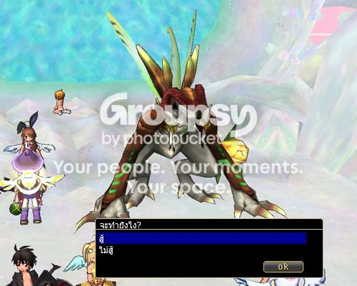
เควสนี้จะเป็นมังกรร่างแรก ไม่อยากเท่าไร
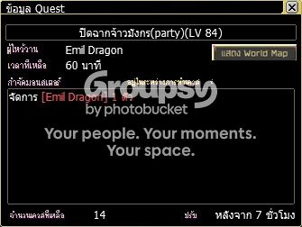
เข้าวาปข้างหลัง NPC : Emil Dragon เลย ถ้าไม่ได้รับเควสจะเข้าไปไม่ได้นะครับ

ลุยๆๆๆๆ

ข้อมูล Emil Dragon (ร่างแรก)
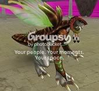
LV : 113
HP : 2,000,000
EXP / Job EXP : 668,700 / 748,350
เมื่อชนะแล้วจะมีวาปกลางแมพให้ ให้เราเข้าวาปออกมาคุยกับ NPC : Emil Dragon เพื่อรับรางวัล
Castus
จากนั้นให้เราเข้าไปที่คาสิโน ทางไปคาสิโน ตามแผนที่ข้างล่าง

เมื่อมาที่ห้องคาสิโนแล้วให้คุยกับ NPC : Huka เพื่อขอซื้อ
 Rainbow Fabric
Rainbow Fabric
ในราคา 10,000 eCoin
หมายเหตุ : 1 eCoin = 100 G โดยแลกกับ NPC ดังรูปข้างล่าง
หมายเหตุ 2 : ตอนที่กรอกจำนวนที่ต้องการแลก จะเป็นจำนวน eCoin ที่เราต้องการแลกนะครับ ไม่ใช่จำนวน G ที่เราจะแลก

ให้มาคุยกับ NPC : Rowan ใน Whale Rock Dungeon แมพ Infihity Gallery
โดยเขาจะเปลี่ยน Rainbow Fabric ให้เป็น
Rainbow Thread
ซึ่งจะต้องใช้เงินอีก 10,000 eCoin
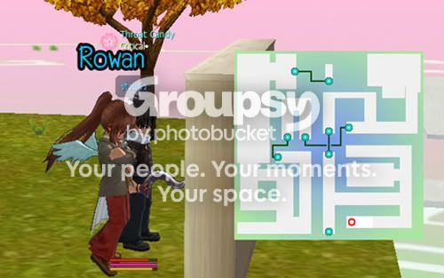
ต่อมาให้เราไปที่เมือง West Port ในดินแดน Dominion เข้าวาปที่ตำแหน่งตามรูปข้างล่าง

คุยกับ NPC : Wholesale Store ตามรูป เลือก [ขายของ] เพื่อซื้อ
Dragon Scale
ในราคา 3,000 CP

หมายเหตุ : สำหรับผู้ที่ทำอาวุธประเภท [ดาบสองมือ] หรือ [หอก] สามารถมาซื้อไว้เลยก็ได้ เพราะต้องมาซื้ออีกทีอยู่ดี
Old Secondhand Sword
15,000 CP
 Old Spear
Old Spear
15,000 CP
Old Secondhand Spear
15,000 CP
ตารางการผสมไอเท็มสำหรับทำอาวุธเก่า โดยแต่ละเซตนั้น จะเป็นการสุ่มเลือกใน 3 ชิ้นนั้น
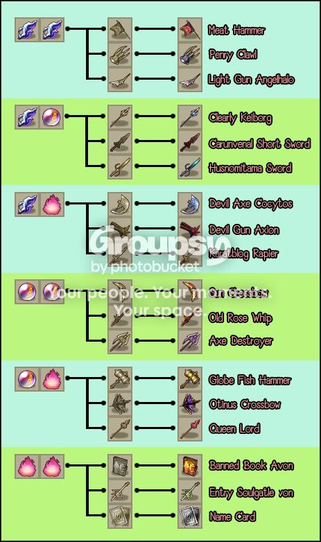
สำหรับผุ้ที่จะทำอาวุธที่ต้องใช้ Medical Rifle ในการทำอาวุธ
ให้เราไปหา NPC : Lewis ใน Whale Rock Dungeon แมพ Infihity Gallery เพื่อรับเควส
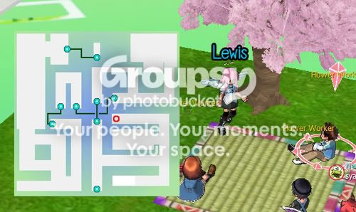
โดยเควสนั้นจะให้เราหา
Throat Candy
จำนวน 10 ชิ้น แล้วนำไปส่ง จะได้
 Medical Rifle
Medical Rifle
เป็นของรางวัล
สำหรับผุ้ที่จะทำอาวุธที่ต้องใช้ Woven Stuff ในการทำอาวุธ
ให้เราไปหา NPC : Clare ใน Whale Rock Dungeon แมพ Infihity Gallery เพื่อรับเควส
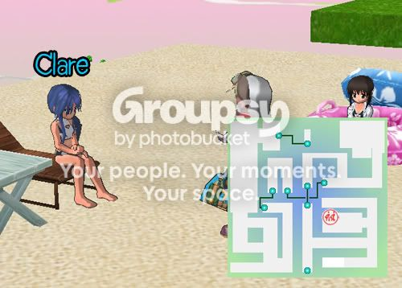
โดยเควสนั้นจะให้เราหา
Droped Item1
จำนวน 10 ชิ้น แล้วนำไปส่ง จะได้
Woven Stuff
เป็นของรางวัล
รายชื่อมอนที่ดรอปไอเท็มเควส
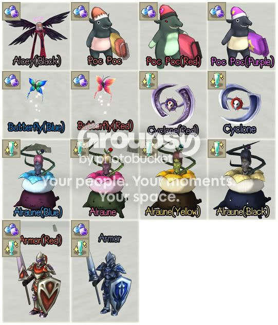
สำหรับผุ้ที่จะทำอาวุธที่ต้องใช้ Fantasy Homula ในการทำอาวุธ
ให้เราไปหา NPC : Call ใน Whale Rock Dungeon แมพ Infihity Gallery เพื่อรับเควส
โดยเควสนั้นจะให้เราไปรับของกับ NPC : Eric ที่ Sky Tower Island

เพื่อนำ
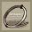
Used Itemไปส่งให้กับ NPC : Call ใน Whale Rock Dungeon แมพ Infihity Gallery
(ตัวที่เรารับเควสมานั่นแหละ) แล้วเราจะได้
Fantasy Homula
เป็นของรางวัล
การทำอาวุธเก่า
เมื่อเราเตรียมของสำหรับทำอาวุธเก่าครบแล้ว
ให้เราไปหา NPC : Hagan ใน Whale Rock Dungeon แมพ Infihity Gallery เพื่อทำอาวุธเก่า
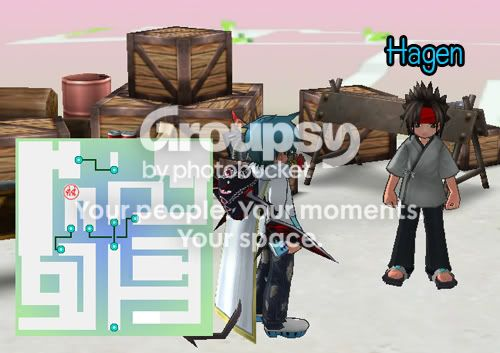
โดยไอเท็มที่ต้องใช้มีดังนี้ และจะต้องเสียเงิน 20,000 eCoin
Castus
Rainbow Fabric
Dragon Scale
ไอเท็มที่ต้องใช้โดยขึ้นอยู่กับอาวุธที่ต้องการทำ
Medical Rifle
Woven Stuff
Fantasy Homula
หมายเหตุ : อาวุธในแต่ละชุดนั้น จะสุ่มว่าจะได้อาวุธชิ้นไหนในชุดนั้นๆ (ไม่ได้ตามที่ต้องการก็ทำใหม่แค่นั้นเอง =w=)
เมื่อได้อาวุธเก่ามาแล้ว ให้เราไปหา NPC : Emil Dragon อีกครั้งเพื่อทำการปลดปล่อยอาวุธให้ใช้งานได้
ทุกชนิดยกเว้น ดาบสองมือและหอก
ให้เราไปหา NPC : Emil Dragon โดยจะต้องพกอาวุธเก่าที่เราจะทำ เมื่อคุยกับแล้ว เราจะทำการปลดปล่อยอาวุธให้ใช้งานได้
โดยจะต้องเสียเงิน 10,000 eCoin
ดาบสองมือและหอก
หมายเหตุ : ต้องเคยทำอาวุธแบบอื่นที่ไม่ใช่ดาบสองมือและหอก มาก่อนอย่างน้อย 1 ครั้ง และพกอาวุธเก่าที่เป็น ดาบสองมือหรือหอก ติดตัวไปด้วย
เมื่อคุยกับ NPC : Emil Dragon แล้ว เราจะสามารถรับเควสเพื่อสู้กับ Emil Dragon ร่างที่แท้จริงได้

หมายเหตุ : โหดกว่าร่างแรกเยอะนะครับ...
ข้อมูล Emil Dragon (ร่างที่แท้จริง)
LV : 250
HP : 4,000,000
EXP / Job EXP : 763,950 / 816,300
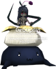
LV : 145
HP : 85,860
EXP / Job EXP : 310,350 / 327,000
เมื่อจัดการได้แล้ว ให้คุยกับ NPC : Emil Dragon ก็จะทำการปลดปล่อยอาวุธให้ใช้งานได้แล้ว